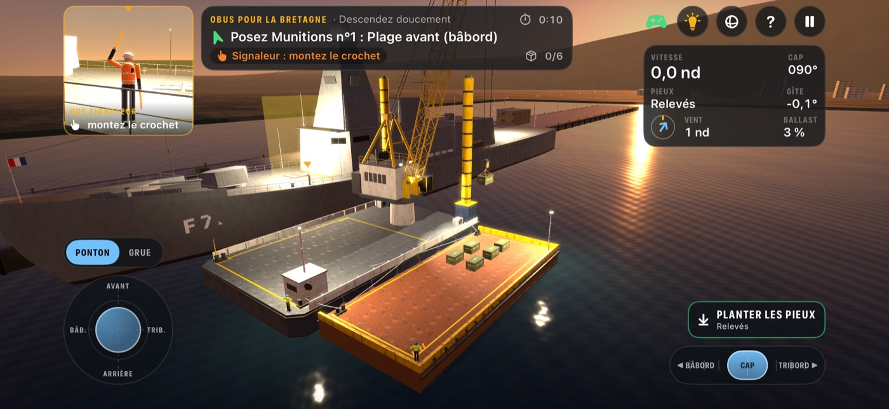
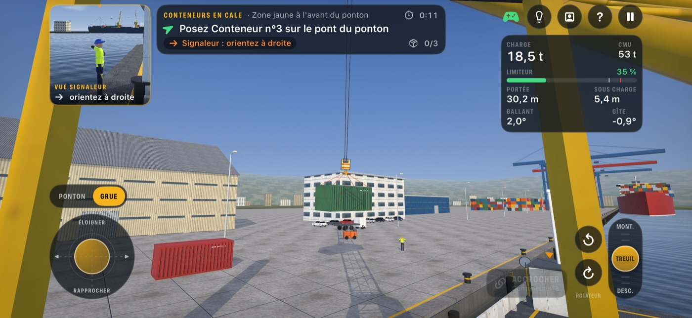
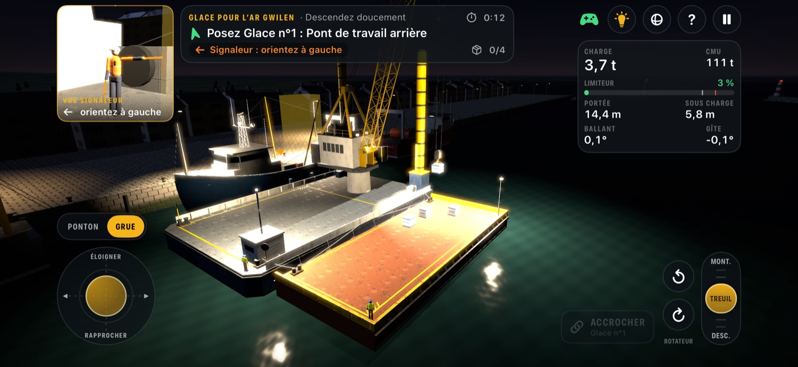
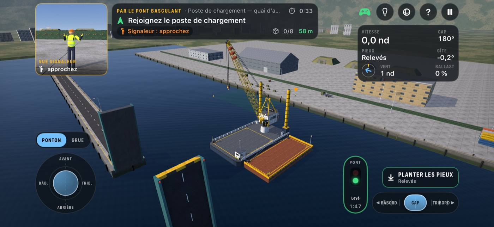
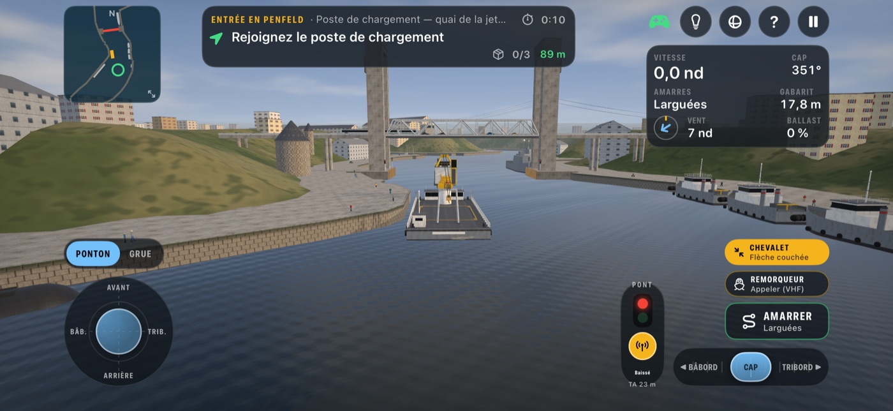
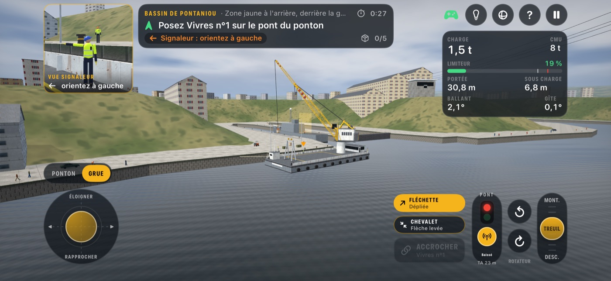
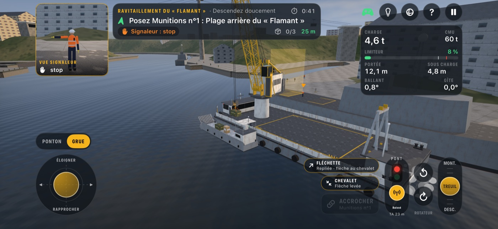
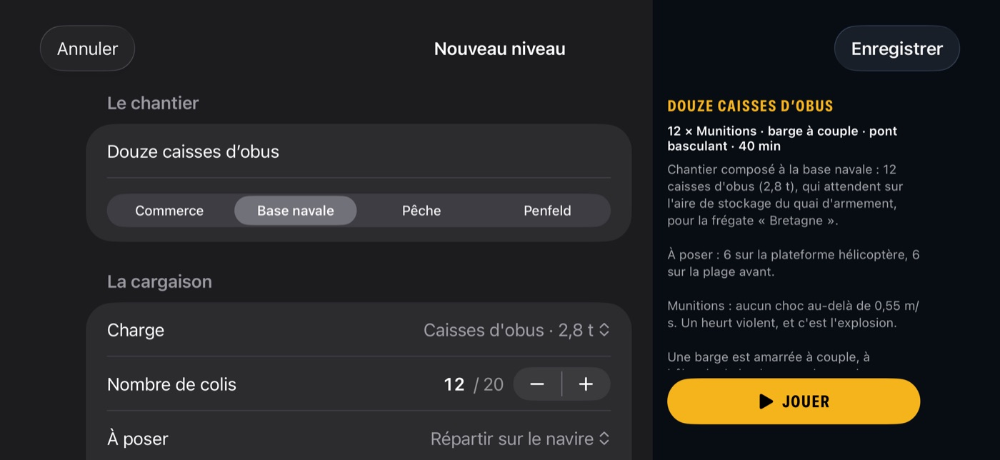
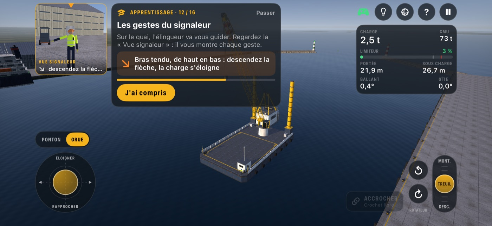

Grue Flottante
Grue FlottanteVous êtes aux commandes d'une grue flottante : le ponton-grue, ou la grue « Alpaga ». Vous approchez du quai, vous plantez les pieux ou vous vous amarrez, vous levez les colis et les posez sur votre pont ; puis vous naviguez jusqu'au navire et descendez chaque charge dans sa zone — entre les mâts, les haubans, les antennes fouets et les antennes filaires tendues au-dessus du pont. La charge se balance au bout du câble, le vent fait dériver le ponton, la houle le fait rouler. Sur le pont, un signaleur vous guide par gestes. Pour iPhone et iPad, à l'horizontale, en plein écran, sans compte ni connexion.









Deux engins, au choix
- La grue « Alpaga », façon grue portuaire du port de Brest (44 × 18 m) : pas de pieux, elle accoste et s'amarre au quai ou à couple du navire. Sa flèche de 30 m porte une fléchette repliable de 15 m, avec un second crochet pour les charges légères qu'il faut aller chercher loin ; elle se couche sur un chevalet à l'arrière pour passer sous les ponts. Au briefing de chaque mission, on choisit son engin.
- Le ponton (34 × 20 m, 1 530 t) avance, recule, glisse sur le côté et pivote grâce à ses propulseurs. Il est lourd : il continue sur son erre, le vent et le courant le font dériver. Les pieux d'ancrage le clouent sur place pour lever.
- La grue (flèche treillis de 42 m) s'oriente, relève ou abaisse sa flèche, monte et descend le crochet, fait tourner la charge. Sa charge maximale dépend de la portée : le limiteur bloque les mouvements qui la dépasseraient.
- La charge pend au bout du câble et part en ballant à chaque à-coup : on la calme en accompagnant son mouvement. Une assistance anti-ballant se règle, ou se coupe.
- Au pupitre tactile ou à la manette de jeu : SteelSeries, Xbox, PlayStation ou manette MFi, deux manches pour le ponton et la grue.
Quatre ports, quinze missions
| Port | Navire | Ce qu'on y charge |
|---|---|---|
| Port de commerce | Cargo à trois cales ouvertes, grues de bord | Caisses, conteneurs de 20 pieds, bobines d'acier, pelle de chantier de 44 t |
| Base navale | Frégate hérissée d'antennes | Vivres, caisses de munitions, conteneurs de missiles — sous le mistral |
| Port de pêche breton | Chalutier, funes et tangons | Glace, vivres, gasoil, filets — avant le coup de vent |
| Brest, la Penfeld | Patrouilleur au bassin de Pontaniou | Groupe électrogène, pièces, vivres, munitions, missile — sous le pont de Recouvrance, de jour comme de nuit, propulseurs en panne, en remorque, et ravitaillement des patrouilleurs au départ du poste d'attache, avec le chaland de débarquement |
Le port militaire de Brest est tracé d'après la vraie géographie : la rade, l'entrée de la Penfeld entre la jetée et le château, la tour Tanguy, le pont levant de Recouvrance (une travée de 88 m qui monte entre quatre pylônes de 70 m : 23 m de tirant d'air baissée, 49 m levée), le téléphérique et ses cabines qui se croisent l'une au-dessus de l'autre, les bassins de Pontaniou. Sur les quais, des promeneurs, des cyclistes, des voitures, des navires amarrés ; sur le pont, le tram et la circulation, que le pontier arrête avant de lever la travée. En aval du pont, trois remorqueurs attendent : appelés à la VHF, ils viennent à couple ou en pousseur, pour gagner de la vitesse ou, quand les propulseurs tombent en panne, pour amener l'engin jusqu'au bassin. Pieux relevés, le ponton-grue doit l'attendre ; l'Alpaga passe dessous flèche couchée.
Chaque mission a son heure, son vent, sa mer, parfois un courant et une limite de temps. Une à trois étoiles selon la précision des poses, le temps et les incidents.
Le signaleur
Sur le quai, un élingueur guide la prise ; sur le navire, un signaleur guide la pose, avec les gestes de commandement de grue : index vers le bas ou vers le haut pour le crochet, bras balayé pour la flèche, bras tendu à gauche ou à droite pour l'orientation, stop, arrêt d'urgence. La « Vue signaleur » le montre en gros plan. Faire passer une charge au-dessus du personnel est un incident.
Composez vos chantiers
Le créateur de niveaux reprend la vraie vie d'une grue portuaire : le nombre de colis à déplacer (jusqu'à 20, selon la place réelle sur le quai et sur le navire), une barge amarrée à couple — vide pour emporter plus, ou déjà chargée —, une passe étroite à franchir, un pont basculant à faire lever par le pontier à la VHF, et le contre-la-montre : tant de colis en tant de minutes. À Brest, un chaland de débarquement peut apporter vivres et munitions au rendez-vous. Et un niveau se partage par un simple lien.
De nuit, et pour apprendre
Toute mission se joue aussi de nuit : ciel étoilé, projecteurs de travail réglables, feux de pont, bâtons lumineux des signaleurs. Deux formations, l'une au ponton-grue, l'autre à l'Alpaga, font découvrir chaque commande, puis les gestes du signaleur, avant un premier chantier complet.
Sans rien de superflu
Pas de compte, pas de publicité, aucun achat intégré, aucune donnée collectée. Tout se joue sur l'iPhone ou l'iPad, hors connexion : ciel, mer, navires, décors et sons sont fabriqués par le jeu lui-même — et chaque famille de sons (vent, moteurs, grue, chocs) a son volume.